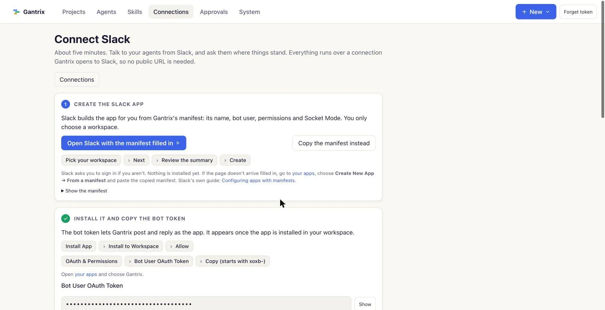
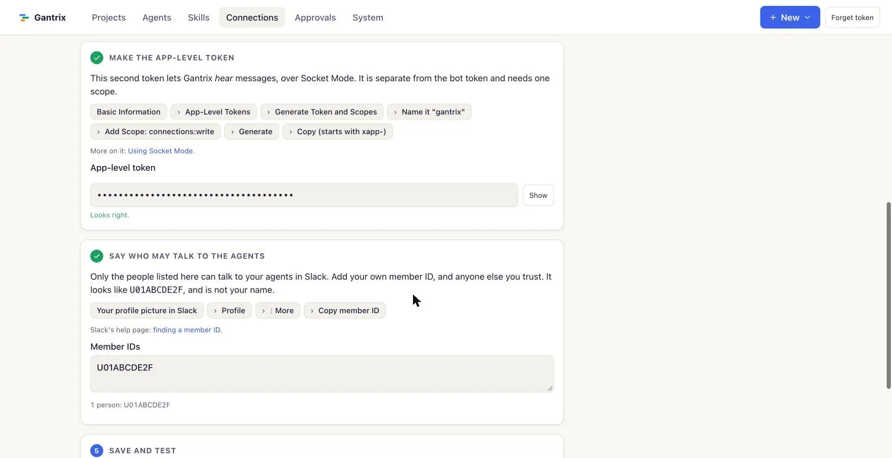
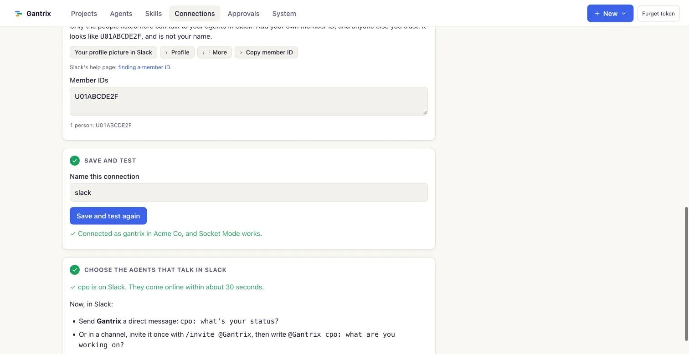

Gantrix / guides / Slack
Connect Gantrix to Slack
Talk to your AI agents from Slack, and ask them where things stand. It takes about five minutes and needs two tokens and your member ID. Gantrix opens the connection to Slack itself (Socket Mode), so you don't need a public URL.
What you will copy
| You need | Starts with | Where it is in Slack |
|---|---|---|
| Bot token | xoxb- | OAuth & Permissions → Bot User OAuth Token, after Install to Workspace |
| App-level token | xapp- | Basic Information → App-Level Tokens → Generate Token and Scopes (scope connections:write) |
| Member ID | U or W | Your profile → ⋮ More → Copy member ID |
Treat both tokens like passwords. Gantrix keeps them on your machine, never shows them again after saving, and accepts env:NAME to read one from the worker's environment instead. Slack's screens change now and then, so the click paths below are written out as text.
Six steps
- 1
Create the Slack app from the manifest
Slack builds the app for you from Gantrix's manifest: its name, bot user, permissions and Socket Mode, so no public URL is needed.
Open Slack with the manifest filled in
- Pick your workspace
- Next
- Review the summary
- Create
Nothing is installed yet. If the page doesn't arrive filled in, open your apps, choose Create New App then From a manifest, and paste the manifest. Slack's own guide: Configuring apps with manifests.

- 2
Install it and copy the bot token
The bot token lets Gantrix post and reply as the app. It starts with
xoxb-.- Install App
- Install to Workspace
- Allow
- OAuth & Permissions
- Bot User OAuth Token
- Copy
- 3
Make the app-level token
This second token lets Gantrix hear messages over Socket Mode. It starts with
xapp-and needs theconnections:writescope. See Using Socket Mode.- Basic Information
- App-Level Tokens
- Generate Token and Scopes
- Name it "gantrix"
- Add Scope: connections:write
- Generate
- Copy
- 4
Find your Slack member ID
Only the people you list can talk to your agents. A member ID looks like
U01ABCDE2F; it is not your name. Slack's help page: finding a member ID.- Your profile picture in Slack
- Profile
- ⋮ More
- Copy member ID

- 5
Save and test in Gantrix
Open Connections then Connect Slack in the dashboard, or go to
#/connect/slack. Paste the two tokens and the member ID. Each field checks what you pasted as you go, and says so if it is the wrong kind of token. Save and test then connects to Slack and tells you who the bot is, which workspace it is in, and whether Socket Mode works. - 6
Pick the agents, then talk to them
Choose which agents are on Slack (it suggests the project manager,
cpo, first). They come online within about 30 seconds. In Slack, send the Gantrix bot a direct message, or invite it to a channel with/invite @Gantrixand write@Gantrix cpo: what's your status?. Each agent knows its own current work, so it can summarize what it is on, what waits for a person, and what it finished.
If something goes wrong
| You see | Do this |
|---|---|
Slack rejected the bot token (invalid_auth) | Copy it again from OAuth & Permissions → Bot User OAuth Token after Install to Workspace. It starts with xoxb-; the app-level token (xapp-) is a different one. |
| Slack rejected the app-level token | Generate a new one under Basic Information → App-Level Tokens and give it the connections:write scope. |
| The test passes but the bot never answers | Your member ID must be in the allowed list, and in a channel the bot must be invited first with /invite @Gantrix. Start a channel message with the agent name: @Gantrix cpo: …. |
| "Which agent?" | Several agents share the connection. Start the message with the agent's name. |
| "Not a member ID" | Slack needs the ID (U…), not a name or a handle. Mentions and profile links are fine to paste. |